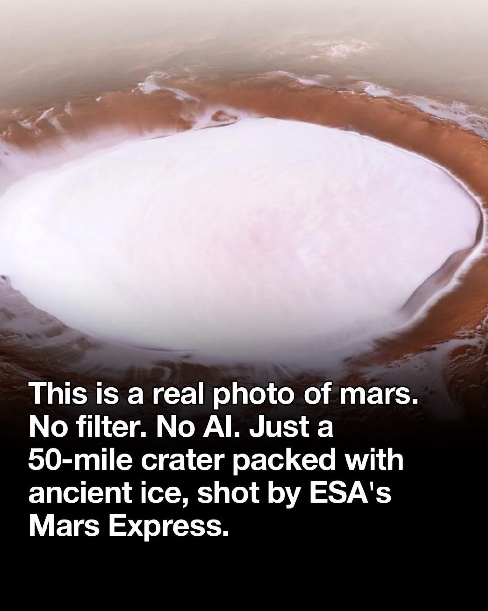
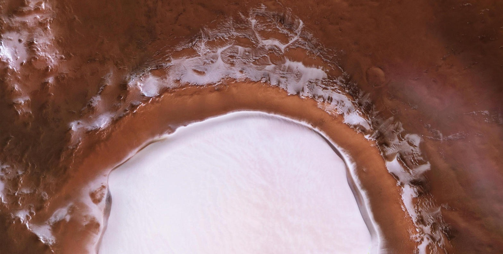
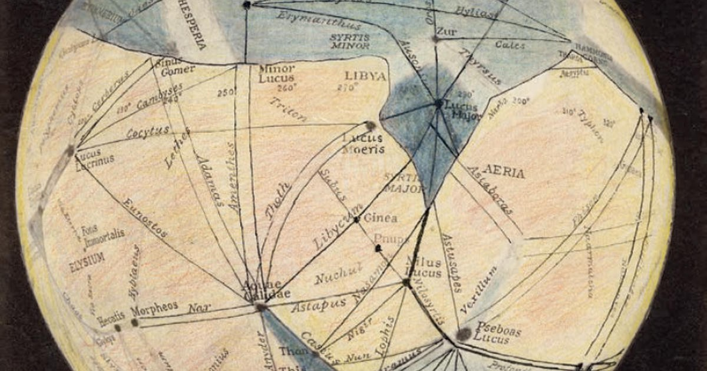
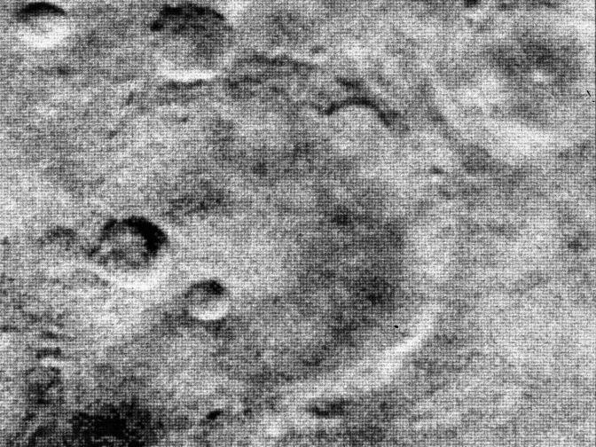
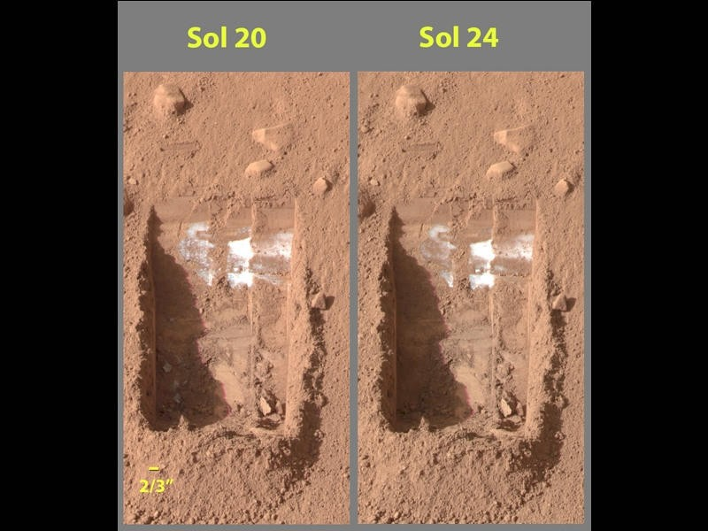

Sometimes you search so long that the thing you wanted starts to feel like a rumor. Then a photograph lands in your hand and the rumor has edges. A rim. A shadow. A white plate fifty miles across. And the first honest thought is not triumph. It is: how did we miss this?
That is the feeling the picture produces. It is a real feeling. It is also slightly wrong about what it is looking at. The crater is real. The ice is real. The photograph is not AI and it is not a filter. What the caption usually forgets is the date, and what the date forgets is the decades of quieter work that already knew the ice was sitting there.

What you are looking at
The bowl is Korolev crater. It sits in the northern lowlands of Mars at about 73 degrees north, 165 degrees east, just south of the dune fields that wrap the north polar cap. It is 81.4 kilometers across. That is 50.6 miles. The rim stands about two kilometers above the surrounding plain. The floor drops about two kilometers below the rim. In the middle of that floor is a permanent mound of water ice up to 1.8 kilometers thick and as much as 60 kilometers wide.
Volume estimates put the ice at about 2,200 cubic kilometers. That is roughly the volume of Great Bear Lake in northern Canada. It is not seasonal frost. It is not carbon dioxide dry ice dressed up as snow. It is water ice, year-round, held in place by a simple piece of physics called a cold trap. Air moving over the deposit cools, sinks, and sits on the ice like a lid. Thin Martian air is a poor conductor of heat. The lid keeps the ice from warming and vanishing.
Width
50.6 mi
81.4 km
Ice thickness
1.8 km
about 1.1 miles
Ice volume
2,200 km³
Great Bear Lake
Photo released
2018
not last week
The image that keeps circulating was assembled by the High Resolution Stereo Camera on ESA's Mars Express. Five orbital strips, including data from orbit 18042 on April 4, 2018, were combined with a digital terrain model and released on December 20, 2018. Mars Express had entered orbit on Christmas Day 2003. The picture was an anniversary postcard, not a first contact.
Credit: ESA / DLR / FU Berlin, CC BY-SA 3.0 IGO. No filter in the meme sense. No generative model. Color channels and geometry from a spacecraft that has been working the problem for fifteen years when the mosaic went public, and more than twenty years now.

How long the search actually ran
People have been arguing about water on Mars for as long as they have been able to point a decent telescope at it. In the late nineteenth century Percival Lowell drew canals and treated them as engineering. He was wrong about the canals. He was not wrong that the question of water would organize the next century of looking.

Then the first close flyby arrived and replaced the drawing with a punch in the mouth. Mariner 4 flew past Mars in July 1965 and returned twenty-one grainy frames. Craters. No canals. A surface that looked more like the Moon than like a dying civilization with irrigation rights. The atmosphere was thin. The pressure was a few millibars. Average temperatures sat tens of degrees below freezing. A whole romantic assumption died in a weekend.

That is the assumption the viral caption is punching at. Not a careful scientific statement. A cultural one. After 1965 it became easy to say there is no water on Mars and mean: there is no ocean, no canal, no city, nothing you would drink. The sentence hardened. It outlived the evidence that slowly walked it back.
Mariner 9, arriving in 1971, found dry river valleys and chaotic terrain that looked like flood country. Viking in 1976 mapped more of the same. Spectroscopists had already detected water vapor in the atmosphere in 1963. Odyssey's gamma-ray spectrometer, after 2001, found hydrogen in the high-latitude ground in amounts that only make sense as ice. Phoenix landed in 2008, dug a trench, and watched bright chunks vanish over four sols the way water ice vanishes when you uncover it. Polar caps were shown to hold perennial water ice, not only dry ice. Ancient clays and sulfates recorded a wetter crust billions of years earlier. Zircons in Martian meteorites now push traces of water back to about 4.45 billion years.

So the search was not one hunt that failed until 2018. It was a hundred-year argument that kept changing what "water" was allowed to mean. First canals. Then vapor. Then dry valleys. Then ice mixed with soil. Then ice you can dig. Then ice you can photograph from orbit so clearly that a civilian with a phone feels personally insulted that nobody told him.
This crater was not a secret
Korolev itself was visible in Viking mosaics in the 1970s as a bright-floored northern crater. Thermal work in the early 2000s already treated the interior as ice-rich. Kieffer and Titus wrote about it in 2001. Armstrong and others used THEMIS and TES through the mid-2000s and concluded the basin held thick, high-inertia material consistent with water ice or extremely ice-rich ground. In 2016 a Geophysical Research Letters paper used SHARAD radar to map the three-dimensional structure of the dome: 1,400 to 3,500 cubic kilometers of water ice, up to 1.8 kilometers thick, layered in a way that looks like the north polar layered deposits, deposited in place rather than left behind by a vanished ice sheet.
That paper is two years older than the pretty picture. The thermal papers are more than a decade older. The crater had a name. The ice had a volume. What it did not have, for most people, was a photograph that behaves like a photograph of a frozen lake.
That is the whole trick. Instruments can know something for years while the public still lives in the last picture that felt like a conclusion. Mariner 4 was that picture for a long time. Korolev is the picture that replaces it for anyone who has not been reading planetary science papers since Odyssey.
Then why does it feel like we missed it?
Because knowing and seeing are different jobs.
A gamma-ray map of hydrogen is knowledge. A radargram of internal layers is knowledge. A thermal inertia curve that only ice can fit is knowledge. None of those objects look like a lake. They look like plots. You can believe them and still not feel them. The 2018 mosaic does the other job. It puts a white disc in a rust bowl and lets the eye finish the sentence.
We also missed it in the ordinary human way. The ice sits at 73 north. It is not on the tourist path of the first landers. It does not glitter in every wide-angle atlas image the way a city would. From some angles and seasons it is just another bright polar feature. The Christmas 2018 release was a composite from five passes, processed, lit, and framed so the bowl reads as a bowl. Framing is not fraud. Framing is how a fact becomes visible to a nervous system that did not evolve to read spectrometer tables.
And the caption lies a little, which makes the incredulity worse. "Just discovered." "Nobody knew." Snopes and ESA both had to swat that version when the same photo came back around in late 2024 as if it were new. Recycled awe is still awe. It is just not a timestamp.
There is a third reason it feels like a miss. The old sentence, "there is no water on Mars," was never a measurement. It was a mood that settled after the canals died. Moods are sticky. They survive data. They wait for a picture.
Before and after
Before you see the crater, water on Mars is a pile of claims with error bars. Ancient rivers. Subsurface ice. A possible south-polar radar reflection that may or may not be a lake. Polar layered deposits. Hydrated minerals. Every one of those claims is real work. Every one of them still leaves room for the private thought: maybe it is all technical. Maybe it is ice the way a chemist means ice, not ice the way a person means ice.
After you see Korolev, the private thought gets quieter. Not because one photograph proves habitability or a future colony or a hidden ocean. It does not. Liquid water on the surface now is still a hard, separate question. What the photograph ends is the lazy version of the dry-Mars story. You cannot look at a 50-mile plate of water ice, a mile thick, sitting in the open, and keep saying the planet is empty of the stuff. The guess becomes noise.
That is the before-and-after the picture is good for. Not "we found water today." We found a way to stop pretending we had not.
There is a discipline in that, and it is not only about Mars. You can spend years talking around a thing because the evidence arrives in the wrong format. Tables. Briefings. A sentence in a paper that only twenty people read. Then one artifact shows up that a child could point at. The artifact does not create the fact. It retires the alibi.
Sometimes the work is waiting until you know what you are talking about. Sometimes the work is admitting that you already knew and just had not seen it yet.
What holds
- The photo is real. ESA Mars Express HRSC, composite released December 20, 2018.
- The ice is water ice, perennial, held by a cold trap, on the order of 2,200 cubic kilometers.
- The crater and its ice were studied well before the mosaic. Thermal data in the early 2000s. Radar structure in 2016.
- The long search for water on Mars is older than the Space Age. The dry-Mars mood dates to Mariner 4 in 1965. The evidence walked it back for fifty years.
- What felt new in the feed was not the ice. It was the first time the ice looked like ice to people who do not read Icarus.
Sources
- ESA, "Mars Express gets festive: A winter wonderland on Mars," 20 December 2018. Official release of the mosaic and cold-trap explanation.
- ESA / DLR / FU Berlin image credits, CC BY-SA 3.0 IGO. Perspective view from HRSC orbits including 18042 (4 April 2018), 5726, 5692, 5654, and 1412.
- Wikipedia, "Korolev (Martian crater)." Diameter 81.4 km, ice volume about 2,200 km³, 1.8 km central mound.
- Brothers, Holt, et al., "Three-dimensional structure and origin of a 1.8 km thick ice dome within Korolev Crater, Mars," Geophysical Research Letters, 2016.
- Armstrong, Titus, and others, THEMIS/TES thermal studies of Korolev, mid-2000s; Kieffer and Titus 2001.
- Snopes, "An Ice-Capped Crater Was Discovered on Mars," January 2025. Confirms the photo is authentic and not a late-2024 discovery.
- Nature, Bibring et al., 2004. Direct identification of perennial water ice in the south polar cap by Mars Express OMEGA.
- NASA Phoenix, 2008. In-situ confirmation of subsurface water ice.
- Mariner 4 encounter, July 1965. First close images. The cultural hinge from canals to craters.
After the picture
Keep the incredulity. It is the right first response to a 50-mile sheet of ice on a planet we spent a century calling dry. Just aim it at the right target. We did not miss the crater because we were blind. We missed the feeling of the crater because knowledge arrived as numbers long before it arrived as a face. The face showed up in 2018. The numbers were already home.
Guessing is what you do in the gap. After the bowl is in front of you, the honest move is quieter. Look. Measure. Stop narrating a desert that is not empty.